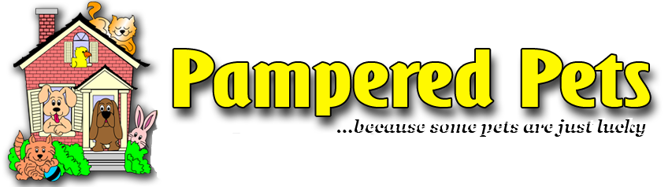

The Dog You Want – Why Training is KeyMike Romberger, CBCC-KA
Dogs have been our companions longer than any other domesticated animal. Therefore, we expect dogs to fit naturally into our world; however, living in a human society is rather unnatural for a dog. When dogs meet, they greet each other by sniffing and licking each other’s muzzles. When a dog tries to greet us, they have to jump up to reach our faces. This is just one example of where dog and human customs come into conflict. As responsible dog owners, we can use training to assist our dogs to live in our world. When people say a dog is well-behaved, what they really mean is that the dog has learned to live effectively in a human community. A well-behaved dog is one that has inhibited many basic instincts – jumping, chewing, and even pulling on a leash to explore – to conform to what humans consider “normal” behavior. Almost all dogs have the capacity to learn the behaviors we desire and to be the dogs we WANT. Training is the key to having the dog you want. The best reason to train your dog is simple. Dogs that are trained have more freedom. Freedom does not mean your dog is not supervised and has free run of the neighborhood. It means that your dog is free to participate in many activities with you. An untrained dog is locked in a bedroom when guests arrive because the owners don’t want the dog to bark at or jump on visitors. An untrained dog cannot go to the park for a walk because the owners are unsure how the dog will react to strangers or to other dogs. As I mentioned earlier, I wanted my dog to be a constant companion. In order to have the dog I wanted, I needed to train my dog. When most people think about training, they typically think of four basic cues – Sit, Down, Stay, and Come. The best part about training these cues is that your dog already knows how to do each of them. All dogs know how to sit and lay down. Your dog will come to you and will stay in one spot. The trick is to teach the dog to do each behavior when you ask for it. While there is no silver bullet when it comes to training, there are a few things to remember that will make training go smoother. Always train your dog with patience and consistency. As we have already discussed, living in your home is akin to living in a foreign country. Your dog is not aware of all the customs he must follow nor does he speak the language. In the dog world, ideas and emotions are presented through body language rather than verbally. By being consistent, you make it easier for the dog to understand the training. If you want your dog to learn Sit, it is best if you say “Sit” in the same tone each time until the dog understands. If you keep changing tone or the phrasing, it may be more difficult. If you say “Sit” one time but on subsequent attempts you say, “Come on, Fido, Sit” or “Why won’t you Sit?” you will just confuse your dog. Patience is just as important in training. Your dog is very interested in pleasing you. Unfortunately, sometimes he just has a tough time understanding what you want. Do not forget, he’s trying to please you while trying to figure out the rules of this foreign land. It never hurts to take a break when things are not going as planned. It is essential that you always set your dog up for success. Training must always be a win-win for you and your dog. In most cases, your dog presents the behavior you want and the dog receives some type of a reward – a pet, going for a walk, or a treat are some common examples. Many owners focus on trying to stop inappropriate behaviors. By its very nature, this causes a win-lose situation. The most successful dog owners teach their dog the behaviors they want rather than trying to stop unwanted behaviors. If the family dog likes to jump on visitors, attempting to stop the dog from jumping will probably increase the jumping in the future. However, by teaching the dog what you want – to Sit and Stay – you give the dog a clear indicator of what is expected when visitors come to the door. Nothing defines a well-behaved dog better than a dog that shows self-control. Training your dog has several benefits on top of providing freedom. One of the biggest benefits is building trust. When you practice patience and consistency, you teach your dog to trust you because good things happen when you are around. Before long, you and your dog will have a closer bond. Best of all, regular training sessions promote mental stimulation. Just a couple minutes of training, a few times a day will provide the right amount mental exercise. This will assist in reducing behaviors like inappropriate chewing or digging, which can be a result of boredom or a lack of mental stimulation. The simple truth is that dog training is not a mystical art. Once you understand that your dog is living in an exotic land, you can use patience and consistency to bridge the gap between your worlds. As you begin to understand each other, you will learn that you journeyed from the dog you HAD to the dog you always WANTED. ©2012 Who's Your Doggie. Mike Romberger is the owner of Who’s Your Doggie in Harrisburg, PA. Mike is a certified canine behavior consultant that specializes in rescue dogs. He has spent most of his career preparing dogs for adoption by modifying behavior through positive reinforcement methods. Mike can be found at www.WhosDoggie.com. |
